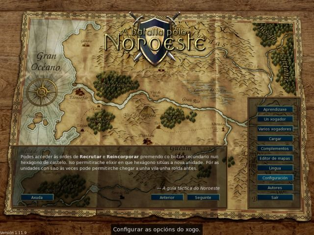
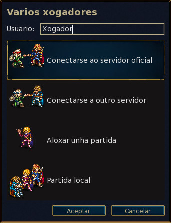
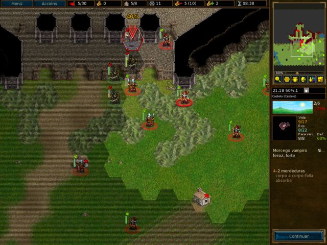
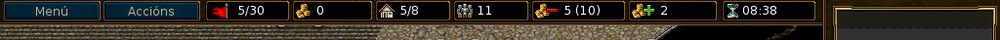
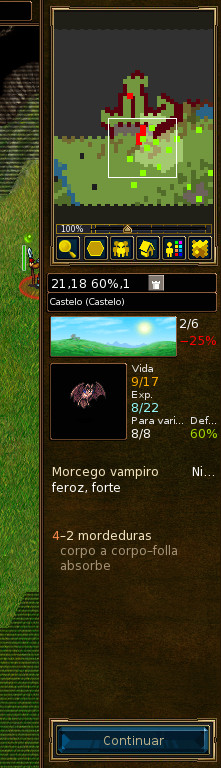
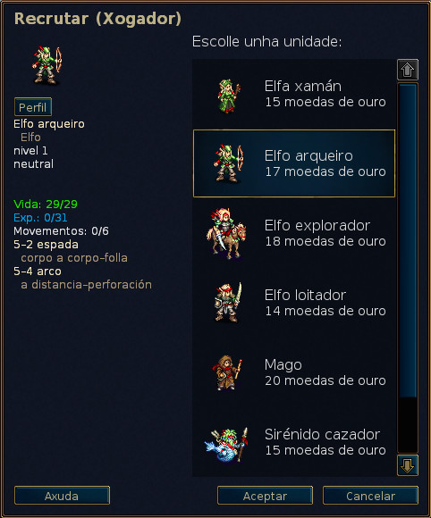

Índice
- Limiar
- 1. Os primeiros pasos
- 2. Xogar
- 3. Algunhas estratexias e consellos
- 3.1. Estratexias básicas
- 3.1.1. Non malgastes as unidades
- 3.1.2. Mantente fóra do alcance do inimigo
- 3.1.3. Utiliza as zonas de control como escudo
- 3.1.4. Mantén unha liña defensiva
- 3.1.5. Rota as tropas
- 3.1.6. Aproveita as peculiaridades do terreo
- 3.1.7. Escolle ben as vítimas e obxectivos
- 3.1.8. O momento do día
- 3.1.9. A experiencia
- 3.2. Divertirse
Lista de Táboas
- 2.1. Controis e atallos xerais
- 2.2. Atallos das unidades e as quendas
- 2.3. Atallos do modo de planificación
- 2.4. Atallos das partidas con varios xogadores
- 2.5. Outros atallos
- 2.6. Outros atallos
- 2.7. Controis e atallos específicos de Pandora
- 2.8. Momento do día e dano
- 2.9. Bonificacións de experiencia por matar e combater con inimigos de diferentes niveis
- 2.10. As esferas
A batalla polo Noroeste é un xogo de estratexia por roldas ambientado nun mundo fantástico.
Xunta un gran exército, adestrando pouco a pouco aos soldados rasos ata que se convertan en curtidos veteranos. En partidas posteriores, reincorpora os teus guerreiros máis fortes e forma unha hoste letal que ninguén poida derrotar! Escolle as túas unidades de entre unha ampla variedade de especialistas, recruta forzas coas fortalezas axeitadas para loitar ben en diferentes terreos contra calquera que se atreva a opoñerse a ti.
A batalla polo Noroeste conta con varias sagas diferentes agardando a que as xogues. Podes loitar contra orcos, non mortos e bandidos nas fronteiras do Reino do Noroeste; contra dragóns nos altos picos, contra elfos nas verdes extensións do Bosque do Edén, contra ananos nas grandes cavidades subterráneas de Neilga, ou mesmo contra sirénidos na Baía das Perlas. Podes loitar para recuperar o trono do Noroeste, aproveitar o medo que provocan os non mortos para así dominar as terras dos mortais, ou dirixir a túa gloriosa tribo de orcos á vitoria contra os humanos que ousaron saquear as túas terras.
Poderás escoller de entre máis de douscentos tipos distintos de unidades —infantería, cabalería, arqueiros e magos non son máis que o comezo— e combates de todo tipo, desde pequenas emboscadas a enfrontamentos entre grandes exércitos. Tamén podes retar aos amigos —ou descoñecidos— e loitar épicas batallas de fantasía entre varios xogadores.
A batalla polo Noroeste é software libre, e tras el hai unha próspera comunidade de voluntarios que cooperan para mellorar o xogo día a día. Podes crear as túas propias unidades personalizadas, así coma os teus escenarios, e mesmo campañas completas. Os contidos mantidos polos usuarios están a disposición pública nun servidor de complementos, e os mellores contidos pode que acaben incluídos nas edicións oficiais do xogo.
A parte coñecida do gran continente, onde se atopa situado o Reino do Noroeste, adoita dividirse en tres zonas: as Terras Nórdicas, nas que non existe nin orde nin lei; o Reino do Noroeste e mailo seu principado ocasional, Elensefar; e os dominios dos elfos do suroeste no Bosque do Edén e máis ao sur.
O Reino do Noroeste está no centro deste continente. Limita co Gran Río polo norte, cos Picos de Dulatus polo leste e o sur, co Bosque do Edén polo suroeste e co océano polo oeste. Elensefar, outrora unha provincia máis do reino, limita co Gran Río polo norte, co Reino do Noroeste polo leste nunha fronteira pouco clara, coa Baía das Perlas polo sur e co océano polo oeste.
As Terras Nórdicas son un territorio salvaxe ao norte do Gran Río. Habitan a rexión diversos grupos de orcos, ananos, bárbaros e elfos. O territorio nordeste ocúpao o Bosque de Lintanir, que alberga os misteriosos segredos do reino dos elfos do norte.
Existen diversas vilas esparexidas por todo o continente nas que podes sandar as tropas e recoller os ingresos necesarios para manter o exército. Tamén terás que cruzar ríos, atravesar bosques, montañas e tundras, e cruzar grandes chairas. En todos sitios existen criaturas que se adaptaron ás condicións do terreo en que viven, polo que nel se desprazarán con maior soltura e loitarán mellor.
O mundo do xogo está habitado por humanos, elfos, ananos, orcos, draconiáns, saurios, sirénidos, nagas e moitas outras especies aínda máis misteriosas e descoñecidas. Polas terras malditas camiñan non mortos, pantasmas e espectros, e monstros rondan as súas ruínas e calabozos. Cada especie se adaptou a un hábitat particular. Os humanos habitan principalmente os prados mornos. Nos outeiros, montañas e covas baixo a terra, orcos e ananos séntense coma na casa. Os bosques dotan dunha gran superioridade aos elfos. E os océanos e ríos domínanos os sirénidos e mailos nagas.
De cara ao xogo, as distintas especies agrúpanse en faccións. Por exemplo, os orcos a miúdo cooperan cos trolles, e os elfos e mailos ananos cos humanos. Algunhas outras faccións reflicten divisións na sociedade dos humanos —leais contra proscritos, por exemplo—. Na meirande parte das campañas, ti controlas unidades dunha única facción. Pero algunhas veces as faccións pactan alianzas entre elas, así que pode que te enfrontes a máis dunha facción nalgún escenario.
Ao iniciar o xogo aparece un fondo inicial e unha columna con botóns: o menú principal. Os botóns só se poder accionar co punteiro. Para os impacientes, recoméndase facer o seguinte: premer o botón de «Lingua» («Language» en inglés) para establecer a lingua preferida, despois premer «Aprendizaxe» para iniciar a aprendizaxe, e unha vez rematada esta xogar a campaña «Un conto sobre dous irmáns», premendo o botón «Campaña» do menú principal e escolléndoa na lista que aparecerá a continuación.

- Aprendizaxe
- A aprendizaxe é unha partida básica pero real na que aprenderás algúns dos controis básicos necesarios para xogar. Gañar ou perder non resulta importante na aprendizaxe, senón aprender que facer. Preme o botón de «Aprendizaxe» para comezar. Nela xogarás o papel do príncipe Conrad ou da princesa Li'sar, que aprenderán do vello mago Delfador. Máis che vale facerlle caso ou te converterá nun sapo!
- Campaña
- O xogo deseñouse desde un principio enfocado nas campañas. As campañas son unha serie de escenarios conectados entre si. Preme este botón para comezar unha nova campaña. Verás a lista de campañas dispoñíbeis —poderás descargar máis se queres—. Selecciona unha campaña e preme «Aceptar» para comezala ou «Cancelar» para pechar a xanela coa lista das campañas. Cada campaña conta cunha serie de niveis de dificultade, que xeralmente serán: «fácil», «normal» e «difícil». Recoméndase o nivel normal xa que é esixente, pero ao mesmo tempo non resulta difícil. Non é posíbel cambiar o nivel de dificultade das campañas durante o seu transcurso. En caso de ter moitos problemas no nivel fácil, a guía básica de estratexia seguramente resulte de utilidade. Unha vez seleccionado o nivel de dificultade, comezarás co primeiro escenario da campaña escollida.
- Varios xogadores
- Preme este botón para xogar escenarios contra un ou máis opoñentes. Podes xogar partidas por internet ou no teu computador, contra persoas ou contra a intelixencia artificial. Tras premer o botón aparecerá un diálogo que che permitirá escoller as condicións do escenario e os bandos. Para máis información véxase a sección sobre escenarios.
- Cargar
- Preme este botón para cargar unha partida gardada. Aparecerá un diálogo coa lista das partidas gardadas. Selecciona unha e preme «Aceptar» para cargala e poder continuala, ou «Cancelar» para volver ao menú principal. Se escolles unha partida de repetición, poderás marcar a caixa de «Repetición». A partida reproducirá todos os movementos desde o principio para que os poidas ver.
- Complementos
- Preme este botón para acceder ao servidor de contidos, onde atoparás unha chea de contido creado por usuarios coma ti. Hai varias campañas, eras (que definen faccións) e mapas para partidas individuais ou de varios xogadores. Mediante o botón «Borrar complementos» poderás eliminalos cando non os queiras máis.
- Editor de mapas
- Preme este botón para iniciar o editor de mapas, no que podes crear mapas personalizados para partidas de varios xogadores ou para construír a túa propia campaña.
- Lingua
- Preme este botón, escolle a lingua que prefiras, e preme «Aceptar» para empregala no xogo, ou «Cancelar» para continuar coa lingua actual. A primeira vez se inicie o xogo aparecerá en inglés ou na lingua do sistema se é que o xogo dispón dela, pero unha vez que a cambies, iniciarase sempre na lingua escollida.
- Configuración
- Preme aquí para cambiar a configuración.
- Autores
- Preme este botón para ver unha lista dos principais contribuidores do xogo. Xeralmente poderás contactar con eles en tempo real na canle IRC «#wesnoth» do servidor FreeNode («irc://irc.freenode.org:6667»).
- Saír
- Preme este botón para pechar o xogo.
- Axuda
- Preme este botón para abrir o sistema de axuda integrada do xogo. Este fornecerache información sobre as unidades e todas as demais cousas relevantes do xogo. A maioría destas cousas menciónanse neste manual.
- Seguinte
- Preme este botón para ler o seguinte consello do «Tomo do Noroeste».
- Anterior
- Preme este botón para ler o consello anterior do «Tomo do Noroeste».
Hai dúas formas básicas de xogar:
- Xogar unha secuencia de escenarios conectados, coñecida coma «campaña», contra a intelixencia artificial.
- Xogar nun único escenario contra outros xogadores ou contra a intelixencia artificial.
As campañas son secuencias de batallas ligadas por unha historia común. As campañas típicas teñen entre 10 e 20 escenarios. A vantaxe principal das campañas é que che permiten desenvolver un exército. A medida que completas os distintos escenarios, as unidades que sobreviven gárdanse para que as uses no seguinte escenario. Se optas por non usar unha unidade durante un escenario, consérvase para o seguinte, de xeito que non perdes as unidades que non usas.
A campaña é o principal modo de xogo e aquel para o que se ideou o xogo orixinalmente. É probabelmente o modo máis divertido, e é o que se lles recomenda aos novos xogadores para que aprendan a xogar.
Completar un escenario adoita levar entre media e dúas horas. Esta é a forma máis rápida de xogar, pero as unidades non se gardarán e non poderás utilizar as unidades das campañas. Podes xogar escenarios contra a intelixencia artificial ou contra outros xogadores, xa sexa por internet ou no teu propio computador. Aos escenarios accédese a través do botón «Varios xogadores» do menú principal.
As partidas de varios xogadores adoitan xogarse contra outros xogadores a través de internet. Tamén poderás xogalas na rede local se a tes. Todas estas partidas coordínanse a través do servidor do xogo. As partidas de varios xogadores poden levar entre unha e dez horas, dependendo de cantos xogadores haxa e do tamaño do mapa. O tempo medio está entre tres e sete horas. As partidas poden gardarse e cargarse tantas veces como se queira. Así que é posíbel que algunhas partidas duren unha ou dúas semanas, aínda que o tempo de xogo sexa só dunhas poucas horas. Non se poden conservar unidades das partidas de varios xogadores entre escenarios, así que o exército que recrutes só servirá para o escenario no que o recrutes.
Cando premas o botón «Varios xogadores» proporcionaránseche varias opcións:

Esta será o nome de usuario que empregues para xogar con outros xogadores no servidor. Se rexistraches unha conta nos foros oficiais, poderás utilizar ese nome de usuario e contrasinal para acceder ao servidor oficial. Sempre que se intente acceder cun nome de usuario que xa exista nos foros, aparecerá un cadro solicitando o correspondente contrasinal, sen o cal non se poden empregar nomes de usuario rexistrados.
Esta opción conéctate directamente ao servidor oficial. Acabarás na sala de espera onde poderás crear partidas persoais e onde xa haberá moitas partidas abertas, e pode que haxa algúns xogadores agardando para unirse a unha nova partida.
Esta opción abre un diálogo que che permite introducir o enderezo do servidor ao que queiras conectarte. Neste diálogo tamén aparece un botón, «Ver a lista», que mostra unha lista dos servidores oficiais que se poden usar se o servidor principal non está dispoñíbel.
Hai unha lista completa de servidores oficiais e xestionados por usuarios aquí (en inglés).
Tamén podes conectarte ao servidor de calquera outro xogador con esta opción do menú. Así que se tes un servidor do xogo operativo na rede local, abonda con que introduzas o enderezo IP e porto (o predeterminado é o 15000) do computador no que se está executando. Por exemplo, se quixer conectar a un servidor co enderezo 192.169.0.10 e no porto predeterminado, habería que escribir «192.168.0.10:15000» no diálogo.
Para poder comezar unha partida de varios xogadores sen usar un servidor externo terás que iniciar ti mesmo o servidor, que adoita chamarse wesnothd. Este iníciase automaticamente en segundo plano ao seleccionar esta entrada do menú. Asemade, deterase en canto todos os xogadores saian del. Os outros xogadores terán que poder conectarse ao teu porto 15000 usando o protocolo TCP para xogar contigo no servidor. Se estás detrás dunha devasa, probabelmente terás que configurala para que permita as conexións entrantes polo porto 15000, e para que dirixa dito tráfico ao servidor do xogo. Para unirse a partidas aloxadas nun servidor público ou doutra persoa non fai falla realizar cambios na devasa.
Isto permite crear unha partida que só se executará no teu computador. Podes xogar unha partida con outras persoas —todos no mesmo computador—, que durará máis ou menos o mesmo que duraría a mesma partida xogada a través de internet. Senón, podes xogar simplemente un escenario contra a intelixencia artificial en vez de contra outros xogadores. Esta última pode ser unha boa forma de familiarizarse cos distintos mapas que se usan para as partidas entre varios xogadores antes de enfrontarte a opoñentes reais. Tamén se pode aproveitar como unha forma sinxela de explorar as capacidades das unidades das diferentes faccións elixindo con que facción xogar e contra que faccións enfrontarse. E por suposto, tamén poderás combinar ambas as dúas posibilidades nunha mesma partida, é dicir, xogar xunta un amigo nunha partida con bandos da intelixencia artificial.

Independentemente de se estás xogando un escenario ou unha campaña, a disposición básica da interface do xogo será a mesma. A maior parte da pantalla está ocupada polo escenario no que transcorre a partida. Arredor do mapa hai varios elementos que proporcionan información útil sobre a partida e describiranse con máis detalle a continuación.

Na parte superior da pantalla, de esquerda a dereita, pódense diferenciar os seguintes elementos:
- O botón «Menú».
- O botón «Accións».
- O contador de roldas (rolda actual/número máximo de roldas).
- O ouro.
- As vilas (vilas propias/número total de vilas).
- O número total de unidades propias.
- O custo de mantemento.
- Os ingresos.
- A hora real —ou tempo restante nas partidas de varios xogadores con límite de tempo—.

Á dereita da pantalla, de arriba a abaixo, pódense distinguir os seguintes elementos:
- O mapa.
- O hexágono no que está (coordenada X, coordenada Y), a defensa e custo de movemento da unidade seleccionada no hexágono sobre o que está o punteiro.
- O tipo de terreo do hexágono sobre o que está o punteiro.
- O indicador do momento do día actual.
- O perfil da última unidade seleccionada.
- O botón «Continuar» (ou «Finalizar» cando rematou o escenario).
Ao comezar un escenario ou unha campaña por vez primeira só contarás cunhas poucas unidades. Unha delas será o teu comandante —identificado por unha pequena icona con forma de coroa dourada—. O comandante estará situado normalmente dentro dun castelo, nun hexágono especial chamado «torre». Cando o estea nunha torre —non só na do seu castelo, senón tamén na de calquera dos castelos inimigos— e teñas ouro abondo, poderás recrutar unidades. En escenarios posteriores poderás reincorporar unidades con experiencia que sobreviviron aos escenarios anteriores. Así poderás comezar a construír un exército para conquistar ao inimigo.
O primeiro que quererás facer será probabelmente recrutar a túa primeira
unidade. Preme Ctrl+R (ou un hexágono baleiro do castelo
co botón dereito do rato e escolle «Recrutar») e poderás recrutar unha
unidade dunha lista con todas as unidades dispoñíbeis para recrutar. Cada
unidade recrutada situarase nun hexágono baleiro do castelo. Unha vez que o
castelo estea cheo, non poderás recrutar máis unidades ata que saques fóra
do castelo algunha. Os comandantes dos opoñentes tamén estarán nas
respectivas torres dos seus castelos e comezarán a recrutar as súas tropas,
así que non perdas o tempo mirando para o escenario, que hai unha batalla
que gañar.
Ao final de cada escenario no que acades a vitoria, as tropas que queden en pé no teu bando gárdanse automaticamente. Ao comezo do seguinte escenario poderás reincorporalas dun xeito semellante ao de recrutar. As tropas reincorporadas adoitan ter máis experiencia que as recrutadas —que non teñen ningunha— e adoitan ser por tanto unha mellor escolla.
Todos os tipos de partida usan os mesmos soldados, chamados unidades. Cada unidade identifícase pola especie, o nivel e a clase. Todas as unidades teñen fortalezas e debilidades, baseadas nas súas resistencias, o terreo no que están, e o seu nivel. Os detalles completos pódense atopar na axuda do xogo.
A medida que as tropas obteñan experiencia na batalla aprenderán máis habilidades e volveranse máis fortes. Tamén poden morrer na batalla, así que necesitarás recrutar e reincorporar máis cando iso ocorra. Pero escolle con cabeza, porque as unidades teñen fortalezas pero tamén debilidades que un opoñente intelixente non tardará en aproveitar.
Presta atención á xanela dos obxectivos ao comezo de cada escenario. Normalmente conseguirás a vitoria matando a todos os líderes inimigos, e só perderás se matan ao teu líder. Pero os escenarios poden ter outros obxectivos para a vitoria: levar ao teu líder a un punto designado, rescatar a alguén, resolver un problema, resistir un asedio ata que pase un certo número de roldas, etc.
Ao gañar un escenario, o mapa tinguirase de gris e o botón de Continuar cambiarase polo de Finalizar. Entón poderás facer cousas como cambiar as opcións de gardado ou —se estás nunha partida entre varios xogadores— conversar con outros xogadores antes de premer ese botón para avanzar.
O exército non loita por amor á arte. Recrutar unidades e mantelas custa cartos. Comezas cada escenario con cartos acumulados de escenarios anteriores —aínda que cada escenario se asegura de que polo menos teñas unha cantidade de ouro mínima para comezar se non acumulaches ouro dabondo de escenarios anteriores— e podes obter máis cumprindo os obxectivos do escenario no menor tempo posíbel e, durante os escenarios, conquistando as vilas. Cada vila que controles proporcionarache uns ingresos de dúas moedas de ouro por rolda. Ao comezar un escenario por vez primeira, adoita ser aconsellábel conseguir o control de tantas vilas como sexa posíbel para asegurarse uns ingresos suficientes para a guerra. Podes ver o teu ouro actual e os ingresos na parte superior da interface, tal e como se describe na sección sobre a mesma.
Ao principio de cada escenario adoita gardarse o estado da partida. Se te derrotan, poderás cargala e intentalo de novo. Unha vez acades a vitoria, preguntaráseche de novo se queres gardar o seguinte escenario e xogalo. Se tes que deixar de xogar durante o transcurso dun escenario, podes gardar a partida durante a túa quenda e volvela cargar máis tarde. E lembra que un bo xogador non necesita gardar durante o transcurso dun escenario. Aínda así, a maioría dos principiantes adoitan facelo con bastante frecuencia.
Estas son as teclas de control predeterminadas. Pode que varíen dependendo do sistema operativo empregado. Por exemplo: en Mac OS X terás que empregar a tecla de orde en vez de a de control. Podes personalizar as teclas de control desde o menú de configuración.
TáboaTáboa 2.1. Controis e atallos xerais
| F1 | Axuda interna do xogo. |
| Frechas | Desprazarse polo mapa. |
| Botón principal | Seleccionar unha unidade, mover a unidade seleccionada a un hexágono, cancelar o movemento da unidade seleccionada. |
| Botón secundario | Menú de contexto, cancelar a acción. |
| Botón central | Centrar a vista do escenario na posición do punteiro. |
| Escape | Saír da partida, saír do menú, cancelar a mensaxe. |
| Ctrl+S | Gardar a partida. |
| Ctrl+O | Cargar unha partida. |
| Ctrl+P | Ir ao menú de «Configuración». |
| Ctrl+Q | Saír da partida. |
| Ctrl+F | Intercambiar entre o modo a pantalla completa e o modo nunha xanela. |
| Ctrl+Alt+M | Activar ou desactivar os sons do xogo. |
| + | Achegar. |
| - | Afastar. |
| 0 | Restablecer a distancia á que se ve o mapa. |
| Ctrl+E | Activar ou desactivar as elipses. |
| Ctrl+G | Mostrar ou non os límites dos hexágonos. |
| Ctrl+A | Activar ou desactivar a velocidade acelerada. |
| Maiús | Activar ou desactivar a velocidade acelerada ou normal mentres se está a premer. |
| Ctrl+J | Mostrar os obxectivos do escenario. |
| S | Mostrar as estatísticas. |
| Alt+S | Mostrar a xanela da «Situación» da partida. |
| Alt+U | Mostrar a lista das unidades. |
| L | Centrar a vista do escenario no líder. |
| Maiús+S | Actualizar o manto do descoñecido. |
TáboaTáboa 2.2. Atallos das unidades e as quendas
| Ctrl+R | Recrutar unha unidade. |
| Ctrl+Alt+R | Volver recrutar o mesmo tipo de unidade que a última vez. |
| Alt+R | Reincorporar unha unidade. |
| Ctrl+N | Renomear a unidade seleccionada. |
| D | Mostrar a descrición da unidade seleccionada. |
| T | Continuar o movemento interrompido da unidade. |
| U | Desfacer o último movemento (só se poden desfacer os movementos “deterministas”). |
| R | Repetir o movemento. |
| N | Percorrer de forma cíclica as unidades ás que lles quedan movementos. |
| Maiús+N | Percorrer de forma cíclica e en orde inversa as unidades ás que lles quedan movementos. |
| Ctrl+V | Mostrar os movementos do inimigo (a onde se pode mover o inimigo na súa seguinte quenda). |
| Ctrl+B | Mostrar os movementos potenciais do inimigo (se as túas unidades non estivesen no mapa). |
| 1-7 | Mostrar a que distancia se pode mover a unidade seleccionada no número de quendas indicado. |
| Barra espaciadora | Rematar a quenda da unidade e pasar á seguinte unidade á que lle queden movementos. |
| Maiús+Barra espaciadora | Facer que a unidade seleccionada manteña a súa posición (remata o seu movemento). |
| Ctrl+Barra espaciadora | Rematar a quenda. |
TáboaTáboa 2.3. Atallos do modo de planificación
| P | Activar ou desactivar o modo de planificación. |
| Y | Executar a acción planificada. |
| H | Borrar a acción planificada. |
| Av Páx | Atrasar a acción na cola. |
| Re Páx | Adiantar a acción na cola. |
| Ctrl+Y | Executar todas as accións. |
| I | Dar por morto. |
TáboaTáboa 2.4. Atallos das partidas con varios xogadores
| M | Enviar unha mensaxe a outro xogador. |
| Ctrl+M | Enviar unha mensaxe aos aliados. |
| Alt+M | Enviar unha mensaxe a todos. |
| Alt+C | Ver o rexistro das conversas. |
| Ctrl+X | Borrar as mensaxes. |
TáboaTáboa 2.5. Outros atallos
| Ctrl+C | Borrar as etiquetas do mapa. |
| / | Buscar (unha etiqueta ou unidade polo seu nome). |
| Alt+I | Poñerlle unha etiqueta a un hexágono do mapa. |
| Ctrl+I | Definir unha etiqueta do equipo. |
| ; | Acceder á liña de ordes (en inglés) |
| F5 | Actualizar a caché. |
| Maiús+C | Crear unha unidade (depuración!). |
| F | Executar un código en Formula da intelixencia artificial. |
Algúns dos atallos en Mac OS X necesitan máis que cambiar «Ctrl» por «Cmd»:
TáboaTáboa 2.6. Outros atallos
| Cmd+W | Saír da partida. |
| Cmd+, | Ir ao menú de «Configuración». |
| Ctrl+F5 | Actualizar a caché. |
| Opción+Barra espaciadora | Rematar a quenda. |
Algúns dos atallos cambiáronse un pouco para aproveitar mellor os controis de Pandora. Se usas a consola, ten en conta o que fan os seguintes controis:
TáboaTáboa 2.7. Controis e atallos específicos de Pandora
| Botóns de dirección | Desprazarse polo mapa. |
| Botón A | Recrutar unha unidade. |
| Botón B | Desfacer o último movemento (só se poden desfacer os movementos “deterministas”). |
| Botón X | Percorrer de forma cíclica as unidades ás que lles quedan movementos. |
| Botón Y | Reincorporar unha unidade. |
| Alt+Botón Y | Atrasar a acción na cola. |
| Alt+Botón X | Adiantar a acción na cola. |
Cada bando comeza cunha certa cantidade de ouro, e recibe dúas moedas de ouro por rolda, máis outras dúas por cada vila que controle. Nunha campaña, o ouro inicial será unha cantidade mínima definida polo escenario, que adoita diminuír a medida que se aumenta o nivel de dificultade. Adicionalmente, adóitase recibir unha porcentaxe do ouro conseguido no escenario anterior. A porcentaxe concreta dependerá do escenario en concreto, e adoita mostrarse como parte dos obxectivos do escenario.

O principal uso que se lle dá ao ouro é o de reunir un exército recrutando novas unidades ou reincorporando unidades de escenarios anteriores dunha campaña. As unidades pódense recrutar ou reincorporar cando o líder está na torre dun castelo que teña polo menos un hexágono baleiro —que é onde aparecerá a unidade recrutada ou reincorporada—.
- Preme un hexágono baleiro do castelo co botón secundario e escolle «Recrutar» para engadir novas unidades ás túas filas, a elixir dunha lista que aparecerá a continuación. O custo do recrutamento dependerá da unidade, pero normalmente estará entre as 10 e as 20 moedas de ouro.
- Preme un hexágono baleiro do castelo co botón secundario e escolle «Reincorporar» para volver contar nas túas filas con unidades de escenarios anteriores. Reincorporar unidades custa 20 moedas de ouro por unidade. Tes máis información ao respecto aquí.
Cada unidade ten ademais un custo de mantemento. O custo de mantemento adoita ser igual ao nivel da unidade, a non ser que a unidade sexa «leal» (xa se verá o que é iso máis adiante). As unidades que non se recrutan —coma o líder ou aqueles que se lle unan por propia vontade— adoitan ser «leais». Os bandos só teñen que pagar o mantemento das unidades se en total é superior ao número de vilas baixo o seu control. É dicir, págase por mantemento a diferencia entre o número de vilas e o custo de mantemento total das unidades.
A fórmula para determinar os ingresos por rolda é a seguinte:
2 + vilas - máx(0, mantemento - vilas)
Onde o mantemento é igual á suma de todos os niveis de todas as unidades do bando que non sexan «leais».
Se o custo de mantemento é superior ao número de vilas máis dous, entón o bando comeza a perder ouro. Se é igual, nin se gañan nin se perden ingresos.
O xogo conta con centos de tipos de unidades que se caracterizan por un rico conxunto de estatísticas. As unidades individuais poden ter tamén trazos específicos que as distinguen sutilmente do resto das unidades do mesmo tipo. Ademais, os deseñadores das campañas poden engadir unidades únicas ás súas campañas para ampliar aínda máis as opcións dispoñíbeis para os xogadores.
As estatísticas básicas das unidades inclúen a vida, os puntos de movemento, as armas e o dano que estas inflixen. Ademais, as unidades teñen outras características, coma a aliñación e habilidades especiais, que se describen con máis detalle máis adiante.
Cada unidade ten unha aliñación: legal, neutral, caótica ou crepuscular. A aliñación afecta ao rendemento das unidades nos diferentes momentos do día. Ás unidades neutrais lles resulta indiferente o momento do día. Porén, as unidades legais inflixen máis dano durante o día e menos pola noite, e as unidades caóticas inflixen máis dano pola noite e menos durante o día. As unidades crepusculares fan menos dano durante o día ou a noite.
Contémplanse no xogo seis momentos do día: o amencer, a mañá, a tarde, o anoitecer, a noitiña e a noite pecha. A cada un destes momentos do día corresponderá unha imaxe na que sol e lúa estarán nunha posición distinta.
A seguinte táboa mostra os efectos dos distintos momentos do día no dano inflixido por unidades legais, caóticas e crepusculares:
TáboaTáboa 2.8. Momento do día e dano
| Rolda | Imaxe | Momento do día | Legais | Caóticas | Crepusculares |
|---|---|---|---|---|---|
| 1 |

| Amencer | — | — | — |
| 2 |

| Mañá (de día) | +25% | −25% | −25% |
| 3 |

| Tarde (de día) | +25% | −25% | −25% |
| 4 |

| Anoitecer | — | — | — |
| 5 |

| Noitiña (de noite) | −25% | +25% | −25% |
| 6 |

| Noite pecha (de noite) | −25% | +25% | −25% |
| Especial |

| Subsolo | −25% | +25% | −25% |
Ten en conta que algúns escenarios xóganse baixo a terra, onde sempre é noite!
Considérese, por exemplo, unha loita entre unha unidade legal e unha
caótica, tendo as dúas unidades un dano base de doce puntos. Ao amencer e ao
anoitecer, ambas as dúas unidades inflixirán doce puntos de dano cando lle
atinen ao inimigo. Durante a mañá e maila tarde, a unidade legal inflixirá
(12 × 1.25 =) quinte puntos, mentres que a unidade
caótica inflixirá (12 × 0.75 =) nove puntos. Durante a
noitiña e maila noite pecha será ao revés, a unidade legal inflixirá nove
puntos mentres que a unidade caótica inflixirá quince.
Se unha unidade neutral equivalente estivese loitando, sempre inflixiría doce puntos de dano, independentemente do momento do día.
As unidades teñen trazos que reflicten aspectos do seu carácter. Os trazos asígnanselle ao chou ás unidades ao recrutalas. Case toda as unidades recibe dous trazos.
Os posíbeis trazos para a maioría das unidades son os seguintes:
- Intelixencia
- As unidades intelixentes requiren un 20% menos de experiencia da normal para avanzar —os trolles non poden ter este trazo—. As unidades intelixentes son moi útiles ao comezo das campañas, xa que poden avanzar de nivel máis rápido. A medida que avanza a campaña a intelixencia perde utilidade porque os avances adicionais non supoñen un cambio tan significativo coma avanzar un nivel. Se tes moitas unidades no último nivel pode que prefiras reincorporar unidades con trazos máis útiles.
- Rapidez
- As unidades rápidas teñen un punto de movemento adicional, pero tamén un 5% menos de vida do normal. A rapidez é o trazo máis salientábel, sobre todo para as unidades de movemento lento coma os trolles ou a infantería pesada. As unidades rápidas a miúdo incrementan en boa medida a súa mobilidade en terreos accidentados, algo que deberías ter en conta á hora de despregar as túas forzas. Tamén cómpre ter en conta que as unidades rápidas non son tan resistentes coma o resto das unidades, e polo tanto son peores para manter posicións en disputa.
- Resistencia
- As unidades resistentes teñen catro puntos de vida máis un por nivel a maiores da vida normal. As unidades resistentes poden ser útiles en todas as etapas das campañas, e é un trazo útil para todas as unidades. Xeralmente será máis útil en unidades que combinen poucos puntos de vida, boa capacidade defensiva, ou grandes resistencias. As unidades resistentes son especialmente útiles para defender posicións estratéxicas contra os inimigos.
- Forza
- As unidades fortes inflixen un punto máis de dano en cada golpe atinado no combate corpo a corpo, e teñen un punto de vida adicional. Se ben é útil para calquera unidade que combata corpo a corpo, a forza resulta máis efectiva nas unidades cun gran número de ataques, coma os elfo loitadores. As unidades fortes poden resultar de moita utilidade cando só se precisa un pouco máis de dano para que un ataque normal se converta nun golpe mortal.
Tamén hai algúns trazos que só se asignan a certas unidades ou só a unidades dunha certa especie. Son os seguintes:
- Destreza
- As unidades destras inflixen un punto máis de dano por cada golpe a distancia atinado no combate. A destreza é un trazo propio dos elfos. Os elfos son famosos pola súa graza sobrenatural e o seu dominio do arco. Aínda así, algúns son bendicidos cun talento natural que supera ao dos seus irmáns. Estes elfos inflixen un punto adicional de dano con cada frecha.
- Valentía
- As unidades afoutas non sofren penalización ningunha ao atacar durante o momento do día que lle resulta desfavorábel. O trazo poden telo a infantería pesada, os necrófagos, os trolles ou os cadáveres andantes.
- Vitalidade
- Famosos pola súa vitalidade, algúns ananos son máis rexos que outros e poden descansar incluso durante as viaxes. As unidades saudábeis teñen un punto de vida máis do normal e un punto de vida adicional por cada nivel, e sandan os dous puntos de vida por descansar sempre que non loitan nunha rolda, independentemente de se se desprazaron ou non. Asemade, o veleno failles só un cuarto do dano habitual.
Tamén hai algúns trazos que non se asignan ao chou. Estes trazos poden incluso ser asignados polo deseñador do escenario ou ser sempre asignados en base ao tipo de unidade:
- Vellez
- As unidades máis maiores poden ter o trazo «vello», o que resulta nunha redución da súa vida máxima e -8 puntos e unha redución do seu movemento e dano de ataque en -1 puntos.
- Idiotez
- As unidades co trazo «parvo» requiren un 20% máis de experiencia para avanzar.
- Elementalidade
- As unidades elementais non están vivas, e polo tanto son inmunes ao veleno, e tampouco lles afectan a absorción nin a peste. Xeralmente só teñen este trazo.
- Salvaxismo
- As unidades co trazo «salvaxe» só reciben un 50% de defensa nas vilas, sen importar o tipo de terreo sobre o que estas vilas se asenten.
- Lealdade
- Durante as campañas, certas unidades poden optar por unirse ao exército do xogador pola súa propia vontade. Estas unidades son leais. Aínda que hai que pagar para reincorporalas, non precisan mantemento como o resto das unidades. Isto pode convertelas en unidades moi valiosas durante as campañas longas, cando o ouro escasee. Este trazo nunca se lle aplicará ás unidades recrutadas, así que non resultaría moi intelixente despedir a estas unidades ou envialas a unha morte segura.
- Mecánica
- As unidades mecánicas non están vivas, e polo tanto son inmunes ao veleno, e tampouco lles afectan a absorción nin a peste. Xeralmente só teñen este trazo.
- Lentitude
- As unidades lentas sofren da perda de -1 puntos de movemento e perden tamén un -5% da súa vida total.
- Non morte
- As unidades non mortas son inmunes ao veleno, e tampouco lles afectan a absorción nin a peste. Xeralmente só teñen este trazo. Dado que son os corpos sen vida erguidos para loitar de novo, o veleno non ten efecto nelas. Isto pode facelas moi valiosas nos enfrontamentos con inimigos que empregan veleno nos seus ataques.
- Debilidade
- As unidades débiles sofren unha perda de -1 puntos de vida total e de dano de ataque.
Certas unidades teñen ataques especiais. Son os seguintes:
- Puñalada polas costas
- Usado na ofensiva, este ataque inflixe o dobre de dano se hai un inimigo do obxectivo no seu lado oposto, e esa unidade non está incapacitada (petrificada ou paralizada dalgunha maneira).
- Furia
- Usado de forma ofensiva ou defensiva, este ataque prolonga o combate ata que morre un dos combatentes, ou ata que se realicen trinta rondas de ataques.
- Carga
- Cando se usa de forma ofensiva, este ataque inflixe o dobre de dano no obxectivo. Isto tamén fai que a unidade reciba o dobre de dano no contraataque do obxectivo.
- Absorción
- Esta unidade absorbe a vida das unidades vivas, sandándose a ela mesma coa metade do dano inflixido (redondeado cara abaixo).
- Primeiro golpe
- Esta unidade sempre golpea primeiro con este ataque, incluso cando está a ser atacada.
- Maxia
- Este ataque sempre atina sete de cada dez veces, sen importar as capacidades defensivas da unidade atacada.
- Puntería
- Cando se usa de forma ofensiva, este ataque sempre ten como mínimo un 60% de probabilidades de atinar.
- Peste
- Cando unha unidade morre polo ataque da peste, a unidade substitúese por un cadáver andante do bando da unidade que a atacou coa peste. Non funciona contra os non mortos ou as unidades en vilas.
- Veleno
- Este ataque envelena aos obxectivos vivos As unidades envelenadas perden oito puntos de vida por rolda ata que curan ou chegan a ter só un punto de vida. O veleno por si só non pode matar unha unidade.
- Lentitude
- Este ataque ralentiza ao obxectivo durante unha rolda. Ralentizar reduce á metade o dano causado polos ataques e o custo de movemento da unidade ralentizada duplícase. Unha unidade ralentizada terá unha icona de caracol na súa barra de información lateral cando se seleccione.
- Petrificación
- Este ataque converte ao obxectivo en pedra. As unidades convertidas en pedra non poden moverse nin atacar.
- Enxame
- O número de golpes deste ataque diminúe cando a unidade está ferida. O número de golpes é proporcional á vida que lle queda entre a total da unidade. Por exemplo: se unha unidade ten tres cuartos de vida, terá tres cuartos do número de golpes.
Algunhas unidades teñen habilidades que ou afectan directamente a outras unidades, ou teñen un efecto en como a unidade actúa con outras unidades. Estas habilidades son as seguintes:
- Emboscada
- Esta unidade pode ocultarse no bosque e evitar que os inimigos a detecten. As unidades inimigas non poderán vela mentres estea no bosque, agás se teñen unidades adxacentes. A primeira unidade inimiga que descubra a esta non poderá moverse máis nesa quenda.
- Ocultación
- Esta unidade pode agocharse nas vilas (a excepción das vilas somerxidas), e evitar aos seus inimigos, salvo os dos hexágonos adxacentes. As unidades inimigas non poden ver a esta unidade mentres estea nunha vila, agás se hai unidades xunta ela. A primeira unidade inimiga que descubra a esta non poderá moverse máis nesa quenda.
- Curación
- Os curadores poden extraerlle o veleno ás unidades, aínda que esas unidades non sandarán vida algunha durante a rolda en que as curan.
- Alimentación
- Estas unidades gañan +1 punto máximo de vida cada vez que matan outra unidade, salvo que a unidade inimiga fose inmune ás pragas.
- Sandar 4
- Permite ás unidades sandar as unidades amigas adxacentes ao comezo da súa quenda. Unha unidade coidada por esta pode sandar ata catro puntos de vida por rolda, ou evitar que o veleno lle afecte durante esa rolda. Un sandador non pode curar a unha unidade envelenada, e esta debe buscar os coidados necesarios nunha vila, ou por parte dunha unidade que poida curar.
- Sandar 8
- Esta unidade combina remedios de herbas con maxia para sandar ás unidades máis rápido do normal no campo de batalla. Unha unidade coidada por esta pode sandar ata oito puntos de vida por rolda, ou evitar que o veleno lle afecte durante esa rolda. Un sandador non pode curar a unha unidade envelenada, e esta debe buscar os coidados necesarios nunha vila, ou por parte dunha unidade que poida curar.
- Iluminación
- Esta unidade ilumina os arredores facendo que as unidades legais loiten mellor e as unidades caóticas peor. Calquera unidade adxacente a esta loitará coma se en vez de noite aínda estivese anoitecendo, e coma se fose de día cando estea anoitecendo de verdade.
- Liderado
- Esta unidade pode liderar as unidades aliadas adxacentes facendo que loiten mellor. As unidades aliadas adxacentes de menor nivel inflixirán máis dano no combate. Cando unha unidade adxacente de menor nivel estea no mesmo bando que o líder que a manda ao combate, os seus ataques inflixirán un cuarto máis de dano por cada nivel máis que teña o líder.
- Asexo nocturno
- A unidade vólvese invisíbel pola noite. As unidades inimigas non poden ver a esta unidade pola noite, agás se teñen unidades adxacentes. A primeira unidade inimiga que descubra a esta non poderá moverse máis nesa quenda.
- Rexeneración
- A unidade sanda oito puntos de vida por rolda. Se está envelenada, eliminará o veleno en vez de sandar.
- Guerrilla
- Esta unidade ten a habilidade de moverse rápido entre os inimigos, e pode ignorar todas as súas zonas de control.
- Firmeza
- Cando se defende, as resistencias desta unidade duplícanse, ata un máximo do 50%. Non afecta ás súas vulnerabilidades.
- Mergullo
- Esta unidade pode mergullarse nas augas profundas, e evitar ser detectada polos inimigos. As unidades inimigas non poden ver a esta unidade cando estea en augas profundas, agás se teñen unidades canda ela. A primeira unidade inimiga que a descubra non poderá moverse máis nesa quenda.
- Teleportación
- Esta unidade pode teleportarse entre dúas vilas baleiras calquera do seu bando usando un dos seus movementos.
As unidades conseguen experiencia ao loitar. Cando conseguen experiencia dabondo avanzan de nivel, fortalecéndose. A cantidade de experiencia obtida depende do nivel da unidade inimiga e do resultado da batalla: se unha unidade mata ao seu opoñente, recibe oito puntos de experiencia por nivel do inimigo —catro se o inimigo é de nivel 0—, mentres que as unidades que sobreviven á batalla sen matar os seus opoñentes reciben un punto de experiencia por nivel do inimigo. Noutras palabras:
TáboaTáboa 2.9. Bonificacións de experiencia por matar e combater con inimigos de diferentes niveis
| Nivel do inimigo | Bonificación por matalo | Bonificación por sobrevivir |
|---|---|---|
| 0 | 4 | 0 |
| 1 | 8 | 1 |
| 2 | 16 | 2 |
| 3 | 24 | 3 |
| 4 | 32 | 4 |
| 5 | 40 | 5 |
| 6 | 48 | 6 |
Despois de completar un escenario, todas as unidades que sobreviviron estarán dispoñíbeis para reincorporalas no seguinte escenario. Non podes mover ou atacar cunha unidade na quenda na que se recrutou ou reincorporou. Unha unidade reincorporada conserva o seu nivel anterior, a súa experiencia, calquera elemento máxico que conseguise —ás veces— e ademais aparecerá no novo escenario con toda a vida.
Ao seleccionar unha unidade propia, veranse claramente os hexágonos aos que pode moverse, dado que os que queden fóra do seu alcance escurecerán. Se ademais premes un número entre o 2 e o 7 no teclado, mostraranse os hexágonos aos que podería chegar a unidade no número de roldas indicado. Mentres esteas neste modo, ao situar o punteiro sobre un hexágono indicarase o camiño que a unidade tomaría cara ese hexágono, ademais de información adicional sobre a bonificación defensiva da unidade nese hexágono e o número de roldas necesarias para chegar en caso de que necesite máis dunha. Se non se quere mover a unidade, pode cancelarse este modo seleccionando unha unidade diferente —ben manualmente ben premendo a tecla «N»— ou premendo co botón secundario (mentres se mantén premida a tecla «Cmd» no caso de Mac OS X) calquera parte do mapa. As esferas da parte superior da barra de vida das unidades proporcionan unha forma rápida de saber cales das unidades xa se moveron e cales poden moverse máis aínda na quenda actual.
Para mover a unidade seleccionada, preme o hexágono ao que queiras movela e a unidade irá alí. Se escolles un destino ao que a unidade non pode chegar na quenda, moverase ata onde poida e entrará no modo de viaxe. Neste modo a unidade continuará movéndose cara o seu destino nas seguintes roldas. Poderás desfacer facilmente os seus movementos de viaxe na túa seguinte quenda. Tamén podes cambiar o destino dunha unidade seleccionándoa e elixindo un novo destino ou premendo a unidade outra vez para cancelar a viaxe.
Ao entrar unha unidade propia nunha vila neutral ou dun inimigo, a vila pasará a mans do usuario, e a unidade esgotará todos os seus movementos ata a seguinte rolda.
A maioría das unidades exercen unha «zona de control», o que limita os hexágonos aos que poden acceder e polos que poden pasar os adversarios. Estas restricións impostas polas unidades inimigas reflíctense automaticamente tanto no camiño que poden percorrer coma nos hexágonos aos que poden chegar as unidades.
A zona de control dunha unidade esténdese aos seis hexágonos inmediatamente adxacentes a ela, e as unidades que entran na zona de control dun inimigo vense obrigadas a deter os seus movementos. As unidades guerrilleiras ignoran as zonas de control do inimigo e son capaces de moverse por elas libremente sen deterse. As unidades de nivel 0 considéranse demasiado febles para xerar unha zona de control e todas as unidades poden moverse libremente polos hexágonos que as rodean.
Na parte superior da barra de enerxía que se mostra á beira de cada unidade propia hai unha esfera. Esta esfera será:
TáboaTáboa 2.10. As esferas
| Esfera | Imaxe | Descrición |
|---|---|---|
| Verde |

| Se a unidade aínda non se moveu nesta quenda. |
| Amarela |

| Se a unidade xa se moveu pero aínda pode moverse máis ou atacar nesta quenda. |
| Vermella |

| Se a unidade xa non pode moverse ou atacar ou se o usuario deu por finalizada a quenda da mesma. |
| Azul |

| Se a unidade é un aliado que non podes controlar. |
| - |

| As unidades inimigas non teñen ningunha esfera sobre a súa barra de vida. |
Debaixo de cada unidade haberá normalmente unha base ou elipse dunha cor. A cor identifica o seu bando. Nunha partida de campaña, a cor do xogador é a vermella. A cor do bando tamén se mostrará nalgunhas partes da vestimenta da unidade, ou posibelmente na insignia dun escudo.
Normalmente a elipse será un disco sólido. Porén, nas unidades de nivel 0 a elipse ten liñas descontinuas, o que indica que a unidade non ten zona de control.
Algunhas campañas usan unha base en forma de estrela para identificar aos líderes e mailos heroes —unidades que son especiais por algunha razón e que por exemplo non poden morrer durante un escenario—. Outras usan unha coroa prateada sobre a barra de vida para marcar aos heroes. Mesmo hai outras en que os heroes non teñen indicador ningún. Cal usar (se se usa algún) é unha cuestión puramente de estilo cuxa elección queda en mans dos deseñadores das campañas.
Se moves unha das unidades canda unha inimiga, poderala atacar. Selecciona a túa unidade e a continuación preme a unidade inimiga que está xunta ela (á que queres atacar); a continuación mostrarase unha xanela con opcións máis específicas para o combate. Cada unidade ten unha ou máis armas coas que pode atacar. Algunhas, coma as espadas, son armas de combate corpo a corpo, mentres que outras, coma os arcos, son armas de combate a distancia.
Se atacas cunha arma de combate corpo a corpo, o inimigo ao que ataques poderá contraatacar cunha arma de combate corpo a corpo. Se atacas cunha arma de combate a distancia, o inimigo poderá contraatacar cunha arma de combate a distancia. Se o inimigo non ten unha arma do mesmo tipo que a utilizou a túa unidade para atacar, non poderá contraatacar nin inflixir ningún dano nesa loita.
Different types of attacks do different amounts of damage, and a certain number of strikes may be made with each weapon. For instance, an Elvish Fighter does 5 points of damage with its sword every time it hits, and can strike 4 blows with the sword in one exchange. This is written as 5×4, meaning 5 damage per hit, and 4 strikes.
As unidades contan cunha probabilidade de esquivar golpes que dependerá do terreo no que estean. Por exemplo: as unidades en castelos e vilas teñen unha alta probabilidade de esquivar os golpes, así coma os elfos a teñen nos bosques. Para ver o valor defensivo das unidades —é dicir, a probabilidade de evitar que lles atinen— segundo o terreo, preme nelas e despois deixa o punteiro sobre do terreo no que estás interesado, e aparecerá o valor defensivo nel de unidade seleccionada en porcentaxe no panel lateral, así como sobre o propio hexágono.
Para máis información —incluída a probabilidade de que atacante e defensor acaben mortos na loita—, preme o botón de «Cálculo de danos» na xanela de combate.
- Folla: son as armas cun fío cortante, usadas para cortar en anacos aos inimigos. Son exemplos as dagas, as cimitarras, os sabres, as poutadas de draconián, etc.
- Perforación: son as armas cunha punta afiada e un gran mango ou mísiles, usadas para perforar o corpo do inimigo e danar os órganos internos. Son exemplos as picas de infantería ou cabalería ou as frechas.
- Impacto: son as armas que non teñen nin un fío cortante nin unha punta afiada, pero son pesadas dabondo como para romperlle os ósos aos inimigos. Son exemplos as mazas, os bastóns ou as puñadas dos trolles.
- Frío: son as armas que usan o frío ou mísiles de xeo. Son un exemplo as ondas xélidas dos adeptos escuros.
- Lume: son as armas que empregan o lume para asar ao inimigo coma un polo. É un exemplo o alento de lume dos draconiáns.
- Arcano: son ataques que fan esvaecer a maxia que lle dá a vida aos zombis, espectros e outros espíritos e criaturas non mortas. Son exemplos os ataques máxicos dos magos brancos.
A vulnerabilidade das distintas unidades aos distintos tipos de ataque varía.Hai seis porcentaxes na descrición das unidades que mostran a fortaleza ou debilidade da unidade contra os seis tipos de ataque. Unha porcentaxe de resistencia positiva indica que a unidade sufrirá menos danos por ese tipo de ataque. Unha cifra de resistencia negativa indica que a unidade é especialmente vulnerábel a ese tipo de ataque.
Por exemplo: as escamas dos draconiáns protéxenos da maior parte dos tipos de ataque, agás de armas de perforación e de frío. As unidades de cabalería humanas adoitan estar ben protexidas, salvo contra os ataques de perforación, o seu punto débil. Os non mortos son moi resistentes ás armas de folla e de perforación pero moi vulnerábeis aos ataques de impacto e arcanos.
Usar o tipo de ataque máis efectivo contra as unidades inimigas incrementará substancialmente as posibilidades de acabar con elas.
As unidades só poden sandar un máximo de oito puntos de vida por rolda. As unidades que nin se movan nin ataquen durante unha rolda descansarán, recuperando así dous puntos de vida. Os puntos de vida recupéranse a través do descanso e engádense aos puntos de vida sandados, así que é posíbel que unha unidade recupere ata un total de dez puntos de vida por rolda.
Hai dúas formas básicas de que unha unidade sande:
- Descansar nunha vila. A unidade sandará oito puntos de vida cada rolda.
- Estando xunta unidades que poden sandar. O número de puntos de vida sandados especifícase na descrición da habilidade da unidade. Pero sempre serán ben sanda 4 ou sanda 8.
Os trolles e mailos woses teñen a habilidade de sandarse eles mesmos de forma natural a través da rexeneración. Sandarán oito puntos cada rolda se están feridos. Ten en conta que debido a que todas as unidades poden sandar só ata un máximo de oito puntos por rolda, os trolles e os woses non se benefician da atención médica das vilas ou dos sandadores.
Algúns ataques poden envelenar as unidades. Cando isto sucede, a unidade envelenada perderá oito puntos de vida cada rolda ata que cure. O veleno pode curarse descansando nunha vila ou estando canda unha unidade que cure. Unha unidade que sande só poderá evitar que o veleno dane á unidade envelenada, pero non extraerlle o veleno do corpo. Cando se cura o envelenamento a unidade non gaña —sanda— nin perde —envelenamento— vida nesa rolda. Unha unidade non pode sandar de forma normal ata que cure do envelenamento. Aínda así permíteselle descansar, aínda que iso non vai diminuír o efecto do veleno.
Algúns outros consellos sobre sandar:
- A unha unidade pode levarlle varias roldas sandar de todo.
- Os sandadores (elfo xamán, elfo druída, elfa fuxidía, mago branco, mago da luz, paladín) sandan a todas as unidades feridas arredor deles, así que podes manter ás unidades preto da batalla sen perdelas.
- Os sandadores non sandan ás unidades inimigas.
- Os sandadores non poden sandar por si sós —pero mírese o seguinte punto—.
- Usa aos sandadores en parellas, de forma que se poidan sandar mutuamente se for preciso.
- Varios sandadores de diferentes bandos aliados poden sandar á mesma unidade e acelerar así o proceso.
- Os trolles e mailos woses non poden rexenerar outras unidades.
- Os trolles e mailos woses curan o seu envelenamento igual que o fai unha vila.
Os seguintes consellos e principios básicos de combate están pensados para axudarche a comezar o camiño de te converter nun comandante veterano do Noroeste. Os pequenos exemplos concretos están relacionados dalgunha maneira coa campaña «O herdeiro ao trono».
Non envíes ás unidades feridas a unha morte segura. Cando algunha perda máis da metade da vida, deberías considerar seriamente retirala a algún lugar seguro e ou ben deixala descansar nunha vila para que a sanden ou enviala aos coidados dun sandador (coma os elfos xamáns ou os magos brancos). Os sandadores son moi útiles!
Isto é por razóns prácticas: unha unidade moi danada non pode plantarlle fronte a un inimigo, e menos aínda matalo. Entre o ataque e o contraataque, o máis probábel é que morra. E aínda por riba, envialas a unha morte segura supón perder os puntos de experiencia xa conseguidos. Recrutar un substituto pode resultar imposíbel ben porque o líder non está na súa torre ou ben porque non hai cartos dabondo. E aínda que puideses recrutar un substituto, a maioría das veces estará moi lonxe da fronte de batalla. Así que non desperdicies as unidades.
Como protexer ás unidades feridas? O mellor xeito de facelo é deixalas fóra do alcance do adversario. Ningún inimigo poderá atacalas se nin sequera se poden achegar a elas. A seguinte sección sobre a zona de control mostra como restrinxir os movementos do inimigo.
No menú «Accións» podes escoller «Amosar os movementos do inimigo» para resaltar todos os hexágonos aos que o adversario se pode mover. Isto ten en conta as zonas de control. Polo tanto podes comprobar que a unidade moribunda, que está detrás, en realidade non pode ser atacada xa que o inimigo non se pode mover canda ela.
Ao enfrontarte a outro exército, pode que che interese ser o primeiro en atacar, así que intenta rematar os teus movementos deixando ás unidades fóra do alcance do exército inimigo. El non poderá atacar pero é probábel que se achegue ao teu exército quedando ao alcance das túas unidades.
Cada unidade de nivel un ou superior mantén unha zona de control que abarca os seus seis hexágonos adxacentes. Isto significa que unha vez que un inimigo se move dentro dun dos seis hexágonos adxacentes, fórzaselle a deter o seu movemento sen posibilidade de retomalo. Unha excepción son os inimigos co trazo “guerrilleiro”, unha rara habilidade que permite ignorar as zonas de control.
As zonas de control poden impedirlle aos inimigos infiltrarse entre dúas unidades que estean separadas por un ou dous hexágonos. Combinando estas parellas nunha longa muralla ou usándoas en diferentes direccións, podes evitar que o inimigo acade unha unidade ferida que estea detrás da liña formada por elas. O inimigo ten que derrotar primeiro ás unidades que impoñen a súa zona de control. Se o inimigo está algo distante, mesmo podería abondar cunha soa unidade para protexer unha pequena rexión tras ela.
Aliñando varias unidades con como moito un hexágono entre elas, poderás construír unha poderosa liña defensiva. Ten en conta que, debido ao uso de hexágonos no xogo, as liñas horizontais non son liñas rectas, senón zigzags. As liñas rectas “de verdade” son as diagonais e mailas liñas verticais.
Desde unha soa dirección, o inimigo pode atacar calquera das túas unidades da liña defensiva con unicamente dúas das súas unidades ao mesmo tempo. Como regra xeral, unha unidade sa sen debilidades particulares poden resistir o ataque de dúas unidades normais do inimigo do mesmo nivel ou menor sen que a maten.
Desafortunadamente, a liña defensiva terá a miúdo que dobrarse para formar unha cuña ou para adaptarse ao terreo. Nos puntos que fan esquina, as túas unidades poderán ser atacadas por tres inimigos. Isto tamén sucede ao final da liña, se a liña é moi curta. Usa unidades con moitos puntos de vida no terreo axeitado ou con resistencias axeitadas para manter estes puntos débiles. As unidades nestes puntos son as que teñen máis probabilidades de morrer a mans dos inimigos, así que usa neles unidades con poucos ou ningún punto de experiencia.
Aliñar as unidades tamén evita que o inimigo rodee a algunha delas. Debido aos efectos das zonas de control, calquera unidade cun inimigo detrás e outro diante estará atrapada.
Cando unha unidade en primeira liña sufra serios danos, podes poñela a salvo na retagarda. Para manter a liña, terás que substituír esa unidade por unha de reserva, así que mantén unha parella de unidades detrás da primeira liña. Se tes sandadores, as unidades danadas da retagarda hanse recuperar de seguida.
Ten en conta que as túas unidades poden pasar a través dos hexágonos nos que están as túas propias tropas.
Procura situar ás tropas en hexágonos que lles proporcionen un alto valor defensivo, e que ataquen a inimigos en hexágonos que lles reporten un baixo valor defensivo. Desta forma, os contraataques do inimigo inflixirán menos dano.
Por exemplo, poderías situar aos elfos xusto dentro da beira dun bosque, de forma que os orcos atacantes deban estar nos prados mentres os elfos gozan da gran protección do bosque.
Avanzar e atacar é desde logo a parte máis interesante do camiño cara a vitoria. Mata ou debilita aos inimigos que se te poñan por diante e adianta a liña defensiva. Isto pode volverse cada vez máis difícil a medida que o inimigo contraataque na súa quenda.
A miúdo enviarás varias unidades contra unha soa unidade inimiga para acabar con ela, pero a liña defensiva da que formaban parte quedará parcialmente rota. Pode que non che preocupe porque estás fóra do alcance da unidade inimiga máis próxima. Pode que si o faga porque só conseguiches debilitar a un inimigo moi forte que, na súa seguinte quenda, vai contraatacar. Pode que un home a cabalo sexa o mellor para asestar o golpe mortal.
Golpear primeiro é unha vantaxe porque che permite elixir a que unidades te vas enfrontar. Explota as debilidades do inimigo, por exemplo, dirixindo os ataques a distancia contra inimigos sen armas de ataque a distancia. Aproveita debilidades coma a vulnerabilidade das unidades a cabalo contra a perforación. Pero lembra que contraatacarán na súa quenda, así que poderías ter debilidades que o inimigo poida aproveitar.
Por exemplo, os homes a cabalo poden manter unha liña fronte aos orcos roñóns e os cachorros de troll moi ben porque teñen algunhas resistencias contra os ataques de folla e de impacto. Pero poden caer rápido ante os orcos arqueiros e os trasnos lanceiros.
Normalmente paga a pena se podes matar definitivamente —ou case— a unidade á que te enfrontas. Se non estás seguro de acabar co inimigo nunha quenda, asegúrate de que a túa unidade pode soportar os contraataques ou decide que estás preparado para perder esa unidade. Para resistir os golpes do inimigo na súa quenda, adoita ser unha boa idea atacar da forma que lle permita ao inimigo inflixirche menos dano, en troques de buscar facerlle o máximo dano posíbel ao inimigo.
In particular, use your ranged weapons if the enemy has no ranged attack. Using it will often reduce the damage which your units take until the enemy dies.
Lembra que as unidades legais coma os humanos loitan mellor polo día, as unidades caóticas coma os orcos ou os non mortos loitan mellor pola noite, e as unidades crepusculares loitan mellor durante o crepúsculo. O ideal é que te enfrontes ao inimigo por primeira vez cando o momento do día che favoreza ou desfavoreza ao inimigo. Durante os momentos do día en que o inimigo é máis forte, cómpre reforzar as liñas defensivas e despregalas nunha posición favorábel. Cando estea a piques de chegar o momento do día en que o inimigo se debilita, a túa primeira liña debería avanzar cara el.
Por exemplo, os elfos poderían resistir nun bosque durante un ataque nocturno de orcos e avanzar ao amencer. Ata poderías ter en conta que a intelixencia artificial retira aos seus orcos durante o día.
Durante o transcurso da campaña, é moi importante que reúnas unhas forzas con experiencia. En escenarios posteriores suporase que tes unidades de niveis dous e tres dispoñíbeis para reincorporar.
As unidades obteñen a maioría dos seus puntos de experiencia matando unidades inimigas —oito puntos por cada nivel da unidade matada, catro se é cero—. É por iso que a miúdo é boa idea facer que as unidades de nivel máis alto debiliten aos inimigos, pero que o golpe mortal o asesten as unidades que precisen máis experiencia. Os sandadores en particular adoitan ser máis débiles á hora de combater e a miúdo precisan roubar mortes deste xeito para avanzar de nivel.
Ao principio, cando probabelmente non teñas unidades de nivel alto, intenta repartir os golpes mortais entre un pequeno grupo de unidades. Así se converterán rapidamente en unidades de nivel dous, e poderán coidar das demais.
Non esquezas conseguirlle experiencia ao líder. Tes que mantelo a salvo, si, pero se evita demasiado o combate terá un nivel moi baixo para sobrevivir a futuros escenarios.
Non esquezas que o obxectivo de todo xogo é pasalo ben! Aquí van algunhas recomendacións do equipo de desenvolvedores do xogo sobre como gozar de «A batalla polo Noroeste» o máximo posíbel:
- Pensa en xogar a campaña cun nivel medio de dificultade, especialmente se xa tes experiencia cos xogos de estratexia. Cremos que así che resultará moito máis gratificante.
- Non te preocupes moito cando perdas algunhas unidades. As campañas deséñanse para que os xogadores poidan perder algunhas unidades de cando en vez.
- Non abuses das partidas gardadas. Hai tempo, no xogo só permitía gardar as partidas ao final dos escenarios. A capacidade de gardar durante o seu transcurso engadiuse coma unha comodidade para quen vaia continuar a partida outro día, ou para non perdela en caso de que haxa un erro no xogo, no sistema ou no computador. Non recomendamos cargar escenarios gardados pola metade unha e outra vez porque «che mataron o mago branco». Aprende a protexer ao mago e a calcular os riscos. Iso é parte da estratexia!
- Se tes que cargar unha partida, recomendámosche ir ao inicio do escenario, de xeito que escollas unha nova estratexia que funcione, en vez de simplemente atopar números aleatorios que te beneficien.
- Pero lembra, o obxectivo é pasalo ben! Podes ter gustos diferentes aos dos desenvolvedores, así que fai o que che dea a gana! Se che gusta cargar as partidas cada vez que cometes un erro, buscando a partida perfecta onde nunca perdes unha unidade, adiante!
- En primeiro lugar, le os obxectivos do escenario. Ás veces non tes que matar aos líderes inimigos, senón que abonda con que aguantes o seu ataque durante un certo número de roldas, ou collas un obxecto concreto.
- Presta atención á situación do escenario: o terreo, a posición do teu líder e a dos outros líderes.
- Logo, comeza a recrutar unidades. As unidades baratas son útiles para resistir o primeiro embate. Logo poden recrutarse unidades máis avanzadas para apoiar. As unidades rápidas poden usarse coma exploradores, para explorar o mapa e conquistar rapidamente as vilas.
- Intenta capturar e manter o control de tantas vilas coma che sexa posíbel para manter os ingresos de ouro.
- Mantén ás unidades xuntas en grupos de xeito que o inimigo non poida atacar desde moitos flancos, de forma que poidas superar a cada unidade inimiga. Pon ás unidades nunha liña de forma que o inimigo non poida atacar a ningunha delas desde máis de dous hexágonos.
- As diferentes unidades teñen diferentes fortalezas e debilidades dependendo do terreo e de como estean atacando. Preme unha unidade co botón secundario e selecciona a «Descrición da unidade» para máis información.
- Podes empregar as unidades de nivel inferior coma carne de canón, para atrasar o inimigo. Por exemplo, podes empregalas para bloquear os inimigos e evitar que cheguen canda as unidades importantes.
- Podes inflixir dano aos inimigos con unidades avanzadas e despois rematalos con unidades de nivel inferior para darlles máis experiencia e, finalmente, facelas avanzar ao seguinte nivel.
- Cando teñas un mago branco —avance dun mago— ou un druída —avance dun xamán—, pono no medio dun círculo de unidades para sandalas a medida que se moven polo mapa —os xamáns poden facelo tamén, pero non coa mesma eficacia—.
- Perder unidades é normal, mesmo unidades avanzadas.
O momento do día importa moito:
- As unidades legais fan máis dano polo día e menos dano pola noite.
- As unidades caóticas fan máis dano pola noite e menos dano polo día.
- Lembra comprobar sempre o momento do día no lado dereito da pantalla. Pensa a longo prazo. Ten presente o que vai pasar na seguinte rolda tanto coma o que vai pasar nesta.
- Algunhas unidades son resistentes ou vulnerábeis a diferentes tipos de ataques. As unidades con montura son débiles contra os ataques de perforación. Os ataques de lume e arcanos son moi efectivos contra os non mortos. Para ver que resistencia ten unha unidade a un tipo de ataque, prémea co botón secundario, escolle «Descrición da unidade» e vai ao apartado das resistencias, onde poderás ver canto resiste os diferentes tipos de ataque.
Para conseguir a vitoria resulta fundamental manter as unidades sas. Cando lles inflixen dano, podes sandalas movéndoas a vilas ou poñéndoas preto de sandadores —coma o elfo xamán ou o mago branco—. Outras unidades, coma os trolles, teñen a habilidade para sandarse elas mesmas de forma natural.
- As unidades avanzadas son necesarias para matar rapidamente os comandantes inimigos, e para evitar perder moreas de unidades.
- Canto máis rápido gañes un escenario, máis ouro obterás. Conseguirás máis ouro conseguindo a vitoria axiña que facéndote con todas as vilas do mapa durante o resto das roldas.
- Matar todos os líderes inimigos adoita supoñer a vitoria instantánea.
- Despois de escenarios de matanza —nos que sufras moitas baixas— adoita haber escenarios «de descanso» nos que poderás obter facilmente algo de ouro e experiencia (unidades avanzadas).
- As unidades avanzadas teñen uns custos de mantemento superiores aos das unidades de nivel inferior —unha moeda de ouro adicional por nivel—. As unidades leais son unha excepción —carecen de custo de mantemento algún—.